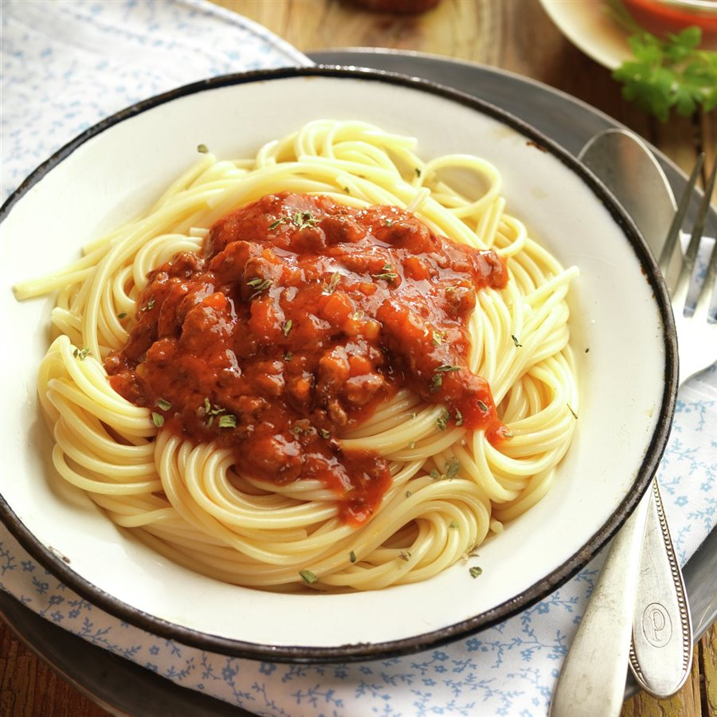

Receta de macarrones

Descripcion
Rica comida italiana que se puede realizar de muchas maneras
Si te gusta la comida italina, pruebala
Ingredientes
- 300 gramos de carne de cerdo
- 200 ml de leche
- 200 gr de tomate triturado
- aceite de oliva
- sal
Pasos
- fria la carne a baja temperatura y mezclelo con el tomate cuando este apunto de dorarse
- una vez este todo mezclado, caliente la leche aparte y una vez ebulla, mezclelo con la mezcla anterior
- condimente al gusto
- Echale mas tomate por encima y una ramita de alguna especia al gusto